LAB 1 – Khởi tạo Notes API & GitHub Repository
Xây dựng dịch vụ RESTful Notes API bằng Node.js/Express và thiết lập quy trình quản lý mã nguồn trên GitHub (notes-api-2224802010780).
LAB 2 – Container hóa Docker & GHCR
Đóng gói ứng dụng với Dockerfile tối ưu, kiểm thử container cục bộ và xuất bản image lên GitHub Container Registry (ghcr.io/cung313/notes-api).
LAB 3 – Tích hợp MongoDB Atlas & Supabase Storage
Kết nối cơ sở dữ liệu đám mây MongoDB Atlas (tối ưu truy vấn với Index & Explain) và lưu trữ tệp đính kèm trên Supabase Storage.
LAB 4 – Bảo mật ứng dụng đám mây
1. Quản lý bí mật
Các thông tin xác thực MONGODB_URI,
SUPABASE_URL, SUPABASE_SERVICE_ROLE_KEY
và JWT_SECRET được quản lý bằng
GitHub Codespaces Secrets.
File .env không được đưa lên GitHub (được kiểm tra qua lịch sử commit
và loại trừ trong .gitignore / .dockerignore).
Repository notes-api-2224802010780 được bật kiểm soát bí mật
(Secret Scanning, Push Protection) và Dependabot.
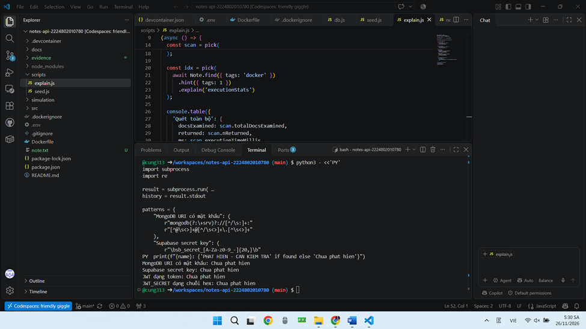
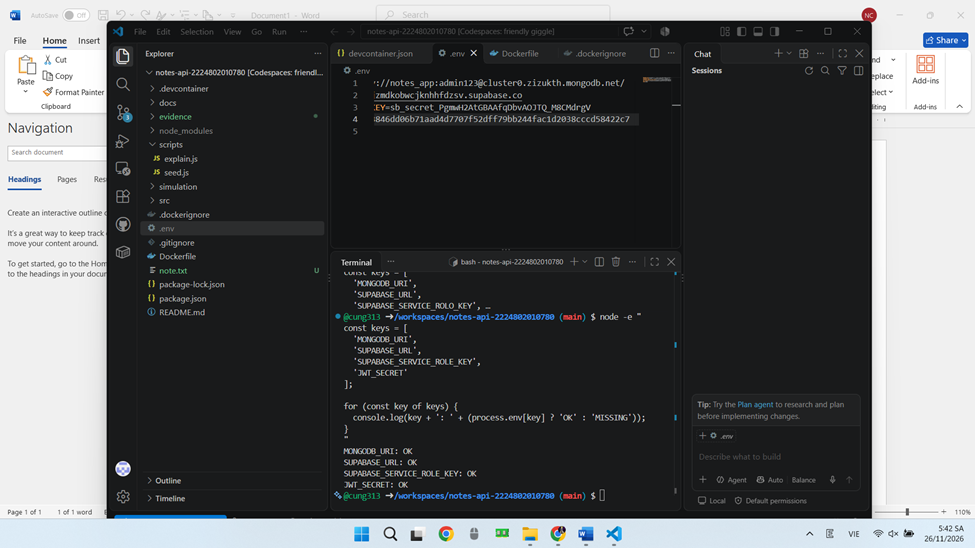
2. Xác thực và phân quyền
API được bổ sung xác thực người dùng bằng JWT (jsonwebtoken, hết hạn 1 giờ),
băm mật khẩu bằng bcryptjs, phân quyền truy cập ghi chú theo trường owner,
thiết lập security headers bằng helmet, chống NoSQL injection bằng
mongoose.set('sanitizeFilter', true) và giới hạn số lần đăng nhập sai bằng
express-rate-limit (tối đa 20 lần / 15 phút).
| Chức năng kiểm thử | Kết quả mong đợi | Kết quả thực tế |
|---|---|---|
| Đăng ký (sv1, sv2) | 201 Created | 201 Created (Đạt) |
| Email trùng | 409 Conflict | 409 Conflict (theo thiết kế route auth) |
| Đăng nhập đúng | 200 OK và trả JWT | 200 OK + token JWT (Đạt) |
| Thiếu token | 401 Unauthorized | 401 Unauthorized ({"error":"Thieu token"}) (Đạt) |
| Token không hợp lệ | 401 Unauthorized | 401 Unauthorized (Đạt) |
| Người dùng khác đọc/sửa ghi chú (B -> A) | 404 Not Found | 404 Not Found ({"error":"Khong tim thay ghi chu"}) (Đạt) |
| Tấn công NoSQL Injection ($gt) | 401 Unauthorized | 401 Unauthorized (Đạt) |
| Request vượt rate limit (lần 21–25) | 429 Too Many Requests | 429 Too Many Requests (Đạt) |
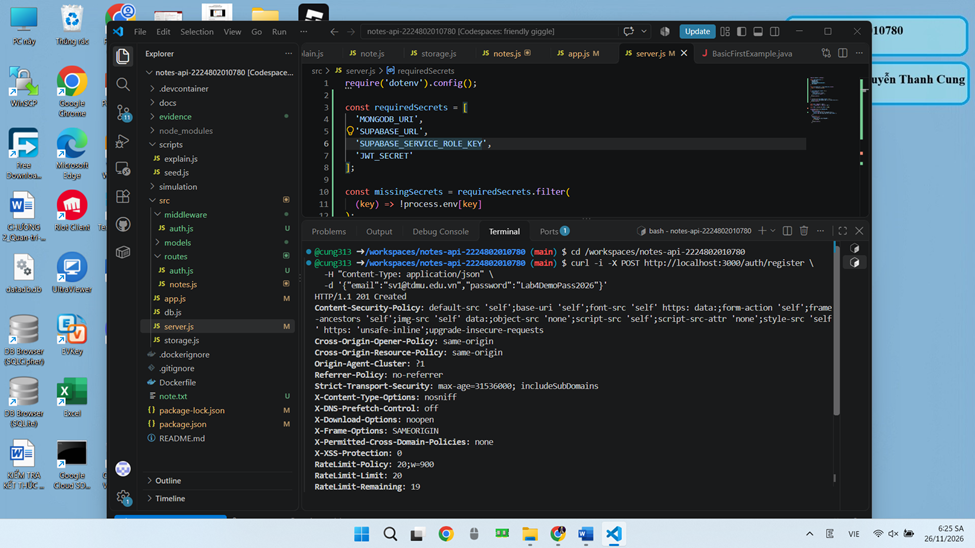
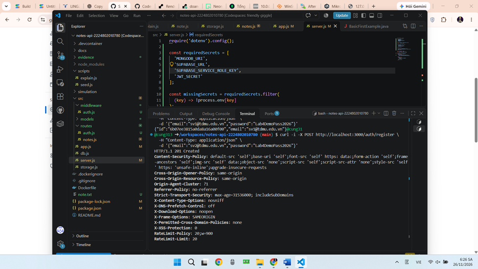
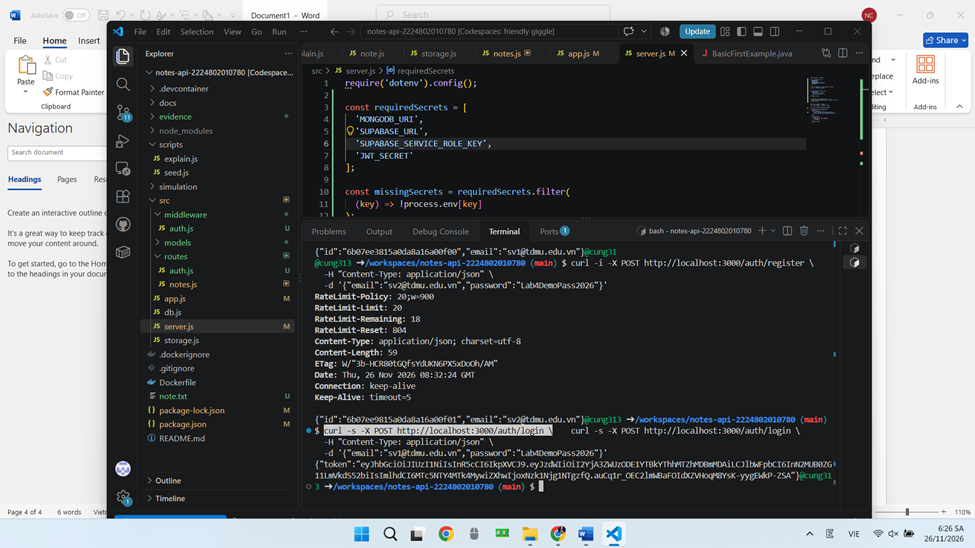
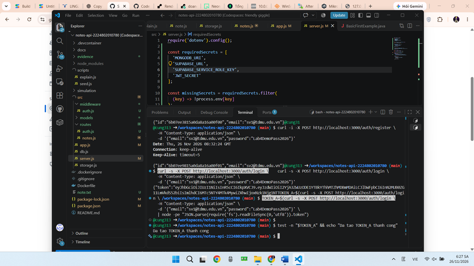
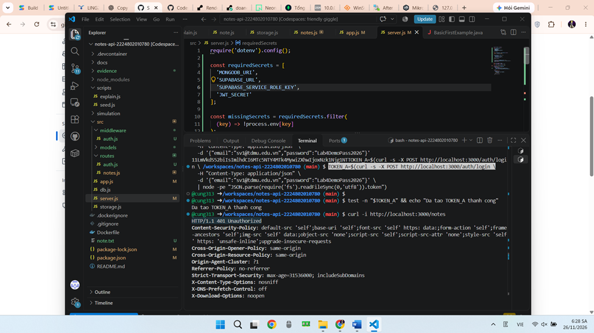
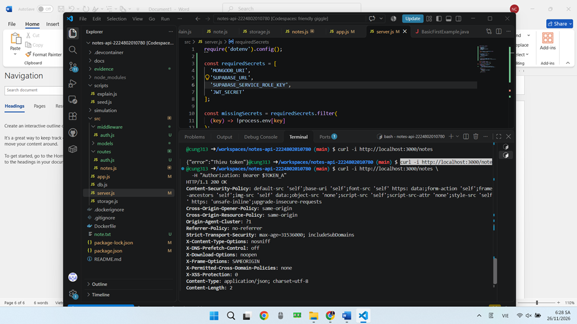
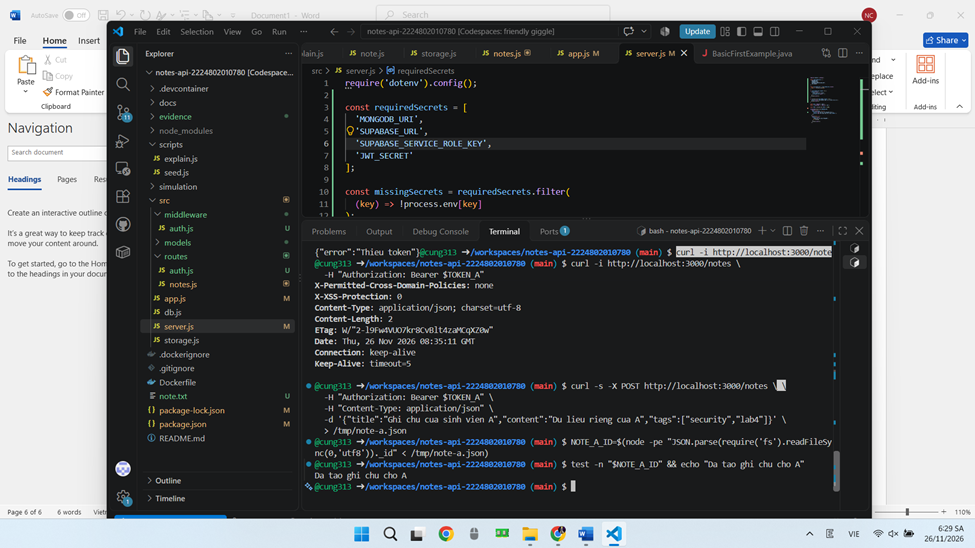
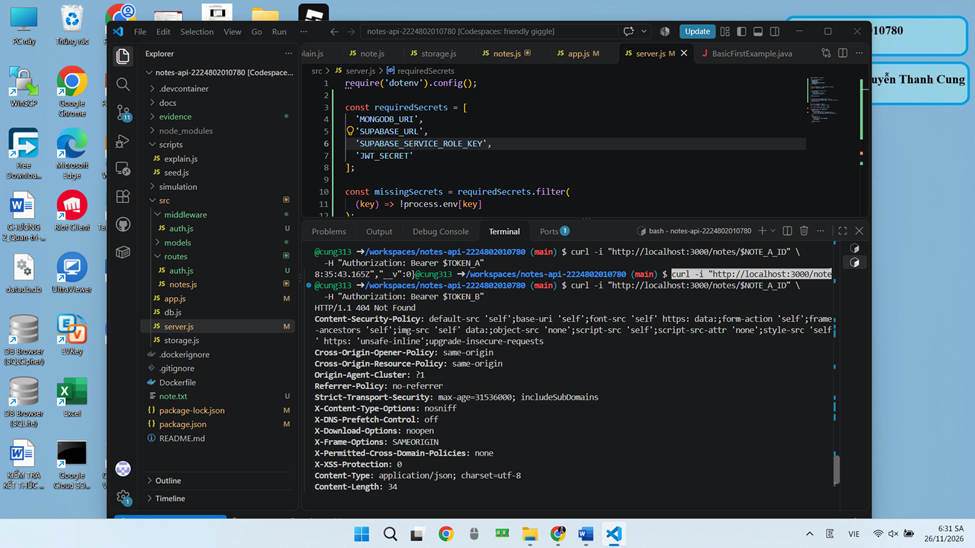
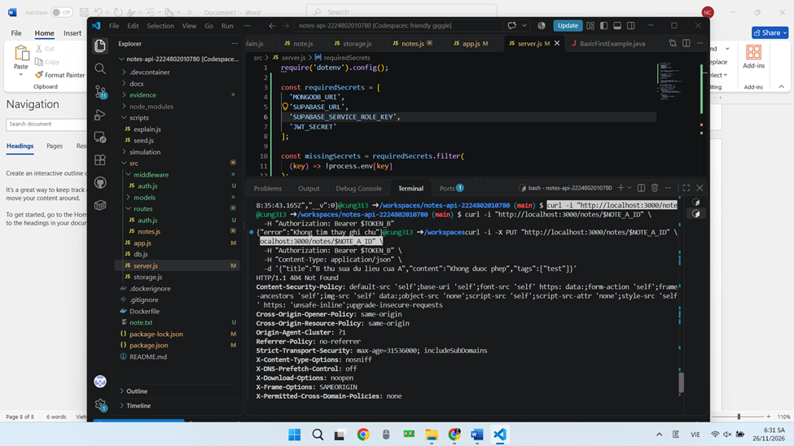
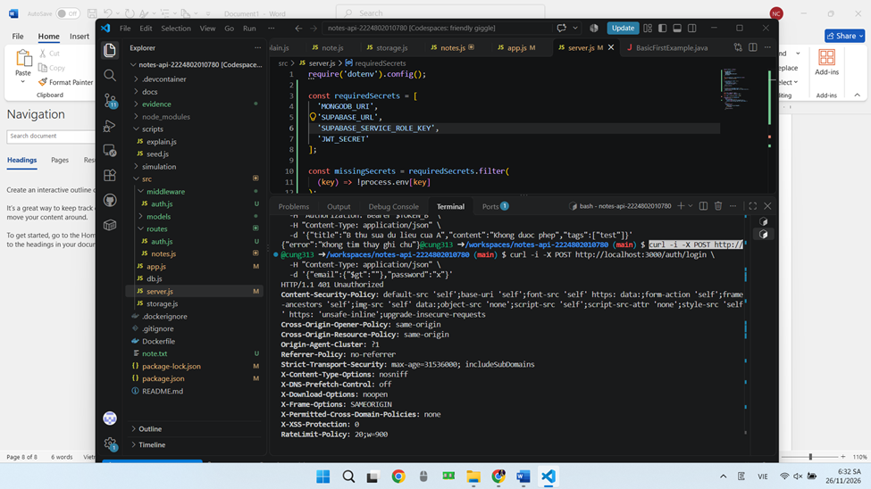
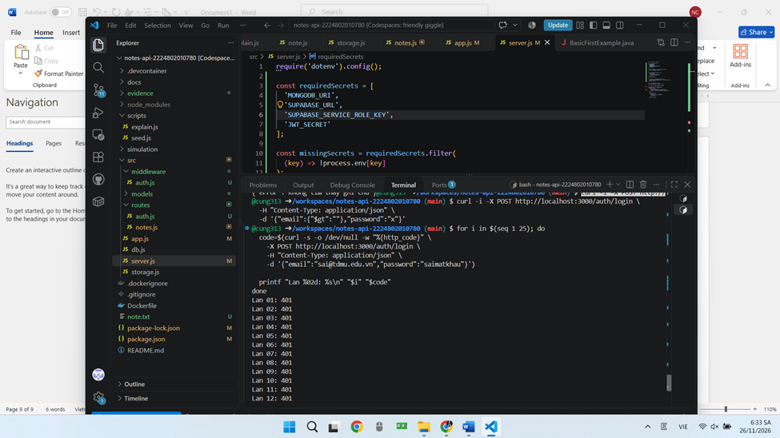
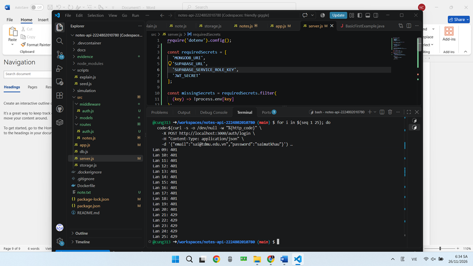
3. Kết quả quét lỗ hổng (Mục 19.6 – 20)
| Image | Kích thước | HIGH | CRITICAL | Chi tiết theo Target (Trivy) |
|---|---|---|---|---|
notes-api:alpine |
289MB | 10 | 0 | OS Alpine: 0 HIGH, 0 CRITICAL | Node.js (package-lock.json): 10 HIGH, 0 CRITICAL |
notes-api:full |
1.67GB | 480 | 20 | OS Debian 12.15: 470 HIGH, 20 CRITICAL | Node.js (package-lock.json): 10 HIGH, 0 CRITICAL |
Phân tích kết quả Trivy (Mục 19.7)
- Kích thước & bề mặt tấn công tầng OS: Image
notes-api:alpinecó kích thước 289MB (giảm ~82,7% so với 1.67GB củanotes-api:fullchạy Debian 12.15). Nhờ hệ điều hành tối giản, tầng OS của Alpine không ghi nhận lỗ hổng HIGH/CRITICAL nào, trong khi tầng OS Debian 12.15 phát sinh tới 470 HIGH và 20 CRITICAL. - Lỗ hổng tầng thư viện Node.js: Cả hai image đều ghi nhận 10 HIGH, 0 CRITICAL từ các dependency trong
package-lock.json(ví dụsigstoreCVE-2026-48815). Điều này chứng minh image nhỏ hơn không đồng nghĩa an toàn tuyệt đối vì lỗ hổng ứng dụng vẫn tồn tại độc lập với base OS. - Tương thích & đánh giá tổng thể: Alpine dùng
musl libckhác vớiglibctrên Debian nên có thể phát sinh khác biệt tương thích với một số gói native; cần kết hợp Trivy,npm auditvà cập nhật dependency định kỳ.
Kiểm tra Dependabot Alerts trên GitHub (Bước 20)
Tại tab Security and quality → Dependabot → Vulnerabilities của repository
cung313/notes-api-2224802010780: ghi nhận Open: 0,
Closed: 0 ("No open alerts" — chưa phát hiện cảnh báo lỗ hổng dependency tại thời điểm kiểm tra).
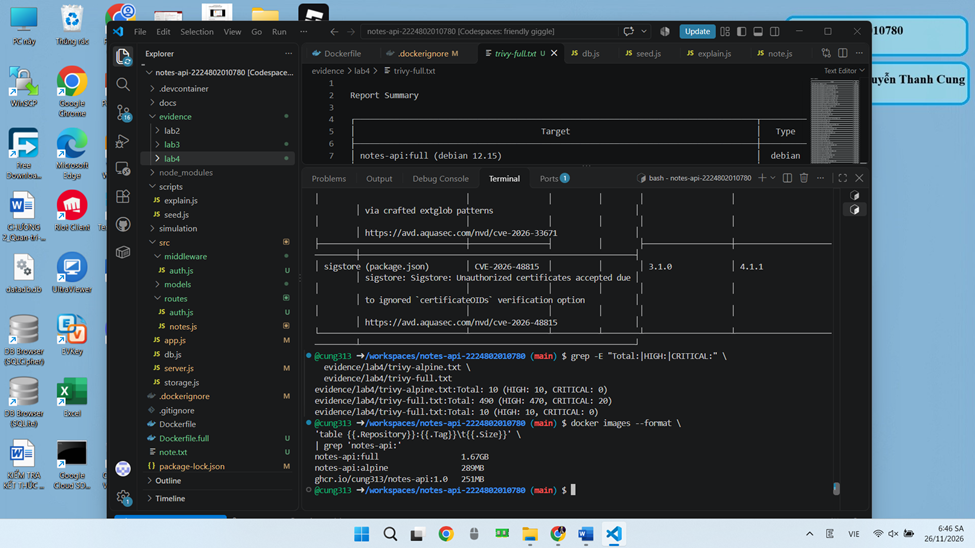
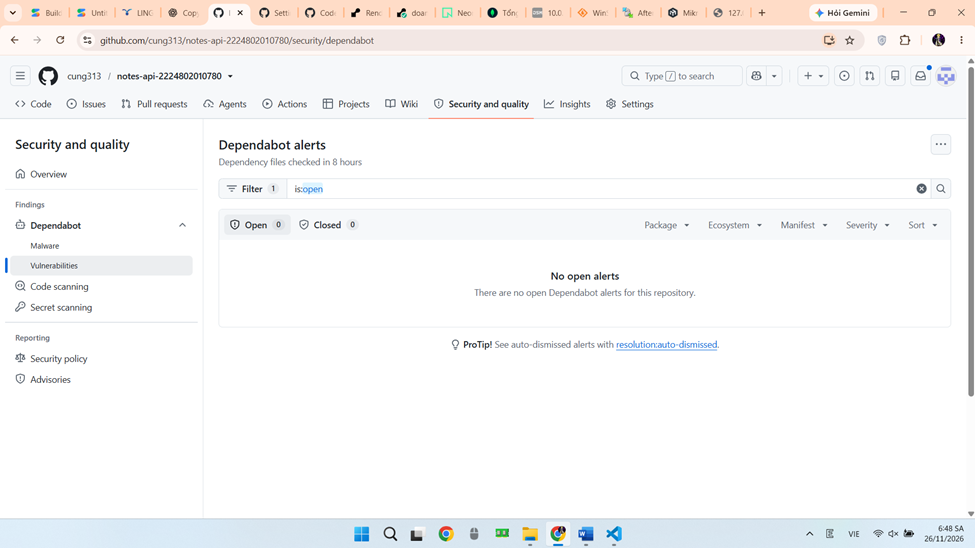
4. Phân tích rủi ro Network Access 0.0.0.0/0
Cấu hình 0.0.0.0/0 trên MongoDB Atlas cho phép kết nối từ mọi địa chỉ IPv4 nhằm hỗ trợ môi trường
GitHub Codespaces có IP động. Để bù trừ rủi ro thử dò mật khẩu từ Internet, nhóm áp dụng tài khoản
notes_app với quyền tối thiểu readWrite trên riêng database notes,
mật khẩu mạnh, kết nối TLS bắt buộc và lưu thông tin xác thực trong GitHub Codespaces Secrets.
| Nội dung | Phân tích |
|---|---|
| Quyết định cấu hình | Cho phép tất cả IP IPv4 (0.0.0.0/0) truy cập ở tầng Network Access trên MongoDB Atlas |
| Rủi ro | Kẻ tấn công từ bất kỳ IP nào trên Internet đều có thể gửi yêu cầu kết nối và dò mật khẩu MongoDB |
| Quyền Database User | Tài khoản notes_app chỉ được cấp quyền tối thiểu readWrite trên riêng database notes |
| Mật khẩu | Sử dụng mật khẩu ngẫu nhiên, đủ độ dài và độ phức tạp cao |
| TLS | Mã hóa đường truyền dữ liệu (TLS/SSL) khi kết nối tới cụm MongoDB Atlas |
| Quản lý bí mật | MONGODB_URI, SUPABASE_URL, SUPABASE_SERVICE_ROLE_KEY và JWT_SECRET lưu trong GitHub Codespaces Secrets, không đưa lên Git |
| Giới hạn còn lại | Nếu thông tin xác thực bị lộ, kẻ tấn công vẫn có thể tìm cách kết nối trực tiếp từ các IP khác nhau |
5. Câu hỏi phản biện
Câu 1. Nếu JWT bị lộ thì hệ thống có thể làm gì trong một giờ?
JWT trong LAB 4 có thời hạn 1 giờ (expiresIn: "1h") và được ký/xác minh bằng JWT_SECRET.
Vì token được thiết kế theo cơ chế stateless, máy chủ không lưu danh sách phiên đăng nhập của từng người dùng. Do đó nếu JWT bị lộ, kẻ tấn công có thể sử dụng token đó để gọi API hợp lệ cho đến khi hết hạn 1 giờ, trừ khi hệ thống bổ sung cơ chế thu hồi (token blacklist/revocation).
Giải pháp chuẩn trong thực tế là dùng Access Token thời hạn ngắn (ví dụ 5–15 phút) kết hợp Refresh Token được quản lý trạng thái phía máy chủ (database hoặc Redis), cho phép thu hồi hoặc xoay vòng (rotation) ngay khi phát hiện bất thường. Đổi lại, cách này làm tăng chi phí lưu trữ và độ phức tạp hệ thống.
Trong tình huống khẩn cấp, quản trị viên có thể thay đổi biến môi trường JWT_SECRET để vô hiệu hóa toàn bộ JWT cũ ngay lập tức, nhưng thao tác này sẽ buộc tất cả người dùng hiện tại phải đăng nhập lại.
Câu 2. Vì sao Alpine thường có ít lỗ hổng hơn? Ít lỗ hổng có đồng nghĩa an toàn hơn?
Alpine Linux là bản phân phối tối giản (dùng musl libc và BusyBox), chỉ đóng gói các thành phần tối thiểu để chạy Node.js nên kích thước chỉ 289MB so với 1.67GB của Debian 12.15 (notes-api:full). Vì ít gói hệ thống đi kèm hơn, bề mặt tấn công tầng OS giảm mạnh (0 HIGH/CRITICAL trên OS Alpine so với 470 HIGH và 20 CRITICAL trên OS Debian 12.15).
Tuy nhiên, ít lỗ hổng được báo cáo không đồng nghĩa an toàn tuyệt đối. Bằng chứng từ kết quả Trivy cho thấy cả hai image đều vẫn tồn tại 10 lỗ hổng HIGH đến từ các thư viện Node.js trong package-lock.json (như sigstore CVE-2026-48815). Ngoài ra, chỉ một lỗ hổng nghiêm trọng trong thư viện cốt lõi cũng đủ gây rủi ro lớn, kết quả quét còn phụ thuộc vào thời điểm cập nhật CSDL lỗ hổng, và sự khác biệt giữa musl libc (Alpine) với glibc (Debian) có thể gây vấn đề tương thích với một số package native.
Do đó cần kết hợp Trivy, npm audit, Dependabot và cập nhật dependency định kỳ để đánh giá bảo mật toàn diện.
Câu 3. Theo mô hình trách nhiệm chia sẻ, phần nào thuộc MongoDB/Supabase và phần nào thuộc nhóm phát triển?
Nhà cung cấp dịch vụ đám mây (MongoDB Atlas, Supabase) chịu trách nhiệm bảo vệ hạ tầng vật lý, máy chủ, hệ thống ảo hóa, mạng nội bộ nền tảng, phần mềm dịch vụ được quản lý và các bản vá vận hành thuộc phạm vi của họ.
Nhóm phát triển chịu trách nhiệm bảo vệ mã nguồn, quản lý bí mật (Secrets/API keys), tài khoản database và nguyên tắc quyền tối thiểu, cấu hình xác thực JWT & mã hóa mật khẩu, kiểm tra phân quyền truy cập dữ liệu theo chủ sở hữu, cấu hình Network Access, bảo mật Docker image và cập nhật thư viện ứng dụng.
Cụ thể trong LAB 4: MongoDB Atlas vận hành cụm cơ sở dữ liệu và cung cấp kết nối TLS, còn nhóm phải giới hạn quyền user notes_app (readWrite trên DB notes), bảo vệ MONGODB_URI và lọc truy vấn theo trường owner. Supabase vận hành dịch vụ Storage, nhưng nhóm phải chọn chế độ Public/Private phù hợp, bảo vệ SUPABASE_SERVICE_ROLE_KEY và kiểm soát quyền upload phía backend.
6. Kết luận
Ứng dụng đã được bổ sung xác thực JWT, mã hóa mật khẩu bằng bcryptjs,
phân quyền theo chủ sở hữu (owner), bảo vệ HTTP headers với helmet,
lọc truy vấn với sanitizeFilter và giới hạn số lần đăng nhập bằng express-rate-limit.
Các công cụ npm audit, Trivy (so sánh Alpine 289MB và Debian 1.67GB) và GitHub Dependabot
được sử dụng để kiểm tra và đánh giá toàn diện lỗ hổng bảo mật.
7. Tài liệu tham khảo
- GitHub Codespaces – Managing Secrets for your codespaces.
- GitHub Docs – Security and Analysis Settings (Secret Scanning, Push Protection, Dependabot).
- Express.js – Security Best Practices in Production.
- JSON Web Token –
node-jsonwebtokenDocumentation. - Aqua Security Trivy – Official Container Vulnerability Scanner Documentation.